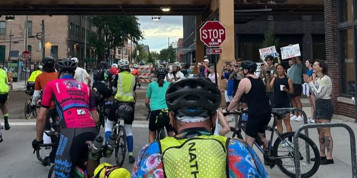

Mishigami 2026
A broken frame, a swollen foot, and a Sunday morning meltdown at mile 390 almost ended my race. I thought about quitting, then rode 731 more miles to finish in 3 days, 16 hours, 19 minutes.
Read the full story →Long rides, hard lessons, and race reports from my silly ultra-endurance adventures.
Most of my writing lives at the intersection of cycling and stubbornness. This page collects full race stories and makes them easier to find than digging through portfolio cards.
A broken frame, a swollen foot, and a Sunday morning meltdown at mile 390 almost ended my race. I thought about quitting, then rode 731 more miles to finish in 3 days, 16 hours, 19 minutes.
Read the full story →
My first bike race and first ultra-endurance event: 1,121 miles around Lake Michigan, sleep deprivation, gear mishaps, and a second-place finish in 3 days, 19 hours.
Read the full story →